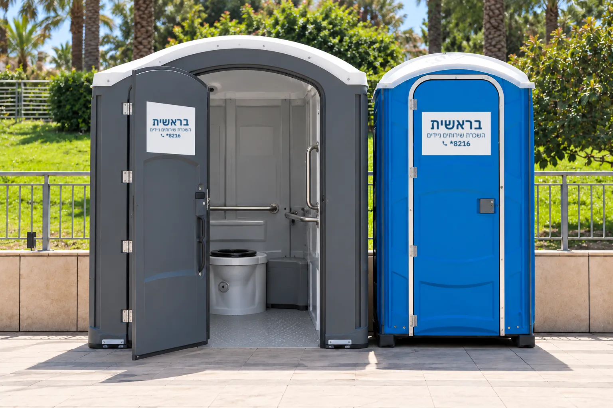

שירותים ניידים לנכים
תא שירותים נגיש אינו מותרות אלא הכרח. באירוע המוני, באתר בנייה או במתחם ציבורי זמני, צריך להציב שירותי נכים זמינים ונוחים, לשימוש נוח ובטוח של אנשים עם מוגבלויות.
מרחב תמרון, מאחזי יד ואבזור מותאם
תא שירותים נגיש תוכנן כדי לענות על הצרכים של אנשים עם מוגבלויות פיזיות. מאפייניו העיקריים: מרחב תמרון גדול יותר, מאחזי יד תומכים ואבזור מותאם.
בישראל, תקנות הנגישות מחייבות התקנה של תאי שירותים נגישים במבנים ציבוריים ובאירועים המוניים.

איך מנגישים תא שירותים נייד
תא גדול יותר
מספיק כדי לאפשר תנועה חופשית של כיסא גלגלים: לפחות 150×150 ס"מ, לסיבוב מלא.
רמפה
רמפה יציבה מאפשרת גישה קלה לתוך התא.
מאחזי יד
מאחזים יציבים לתמיכה ובטיחות.
אסלה מוגבהת
להקל על המעבר מכיסא הגלגלים.
דלת רחבה
לכניסה נוחה של כיסא גלגלים.
אביזרים בגובה מתאים
כיור, מראה ומתקן לנייר טואלט.
בטיחות
לחצן מצוקה ותאורה מספקת.
תא נגיש בודד או קרון מפואר עם מעלון
במגוון שלנו יש תא שירותים כימיים בדגם נכים. לאירועים גדולים יש קרון מפואר דגם 4 תאים נגיש, עם כניסה ייעודית לנכים ומעלון מתקדם, לאירועים של עד 350 אורחים.
בקרון ה-4 תאים התא הנגיש מצויד במעלון חשמלי, רחב מהרגיל וכולל מעקות אחיזה ומרחב תנועה מותאם.
נגישות לכולם
אנשים עם מוגבלויות משתתפים באופן מלא באירועים ובפעילויות ציבוריות.
עמידה בתקנות
עמידה בדרישות החוק והתקנות הנוגעות לנגישות.
מיקום נוח
הציבו את התאים במקום נוח להגעה ומואר בשעות הערב.
שאלות נפוצות על שירותים נגישים
האם שירותים יוקרתיים נגישים לנכים?
כן. ישנו דגם ייחודי שמצויד במעלון מתקדם, המאפשר כניסה נוחה גם לנכים.
מה המידה המינימלית של תא נגיש?
התא צריך להיות גדול מספיק, לפחות 150×150 ס"מ, כדי לאפשר סיבוב מלא של כיסא גלגלים.
האם תאים נגישים מתאימים גם לאתרי בנייה?
כן. באתרי בנייה בוחרים את הדגם בהתאם לאפיון, ועד תאים נגישים בהתאם לתקנות הבטיחות והנגישות.
לייעוץ ולהצעת מחיר על שירותים נגישים חייגו 8216*, או השאירו פרטים בעמוד צור קשר. ייעוץ והצעת מחיר ללא התחייבות.